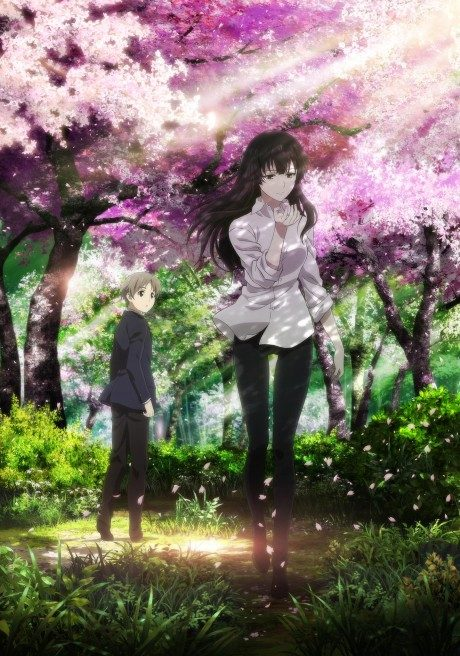
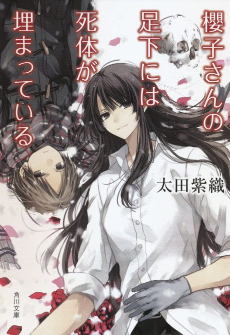

Anime
Light novel2015 · Mystery
Beautiful Bones -Sakurako's Investigation-
櫻子さんの足下には死体が埋まっている
AniList7.1
Animeter—
Episodes12 ep
SourceUnclear
Is it worth pushing through?
Built from what visitors report across all 12 episodes.
Loading reports…Checking what other people said about this one.
Sign in with your email at the top of the page to add your report.